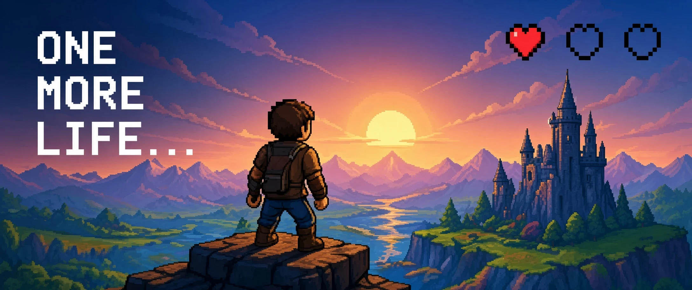

Shachar Adar
Projects
About
Contact
Let’s Connect
→
← All projects

One more life…
Game Development
Incremental
Web App
An incremental game that lets you get stronger with each death and reincarnation.
More projects
Automated Job Search
All-in
Kids daily screen time